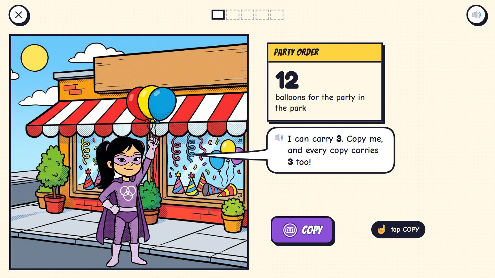
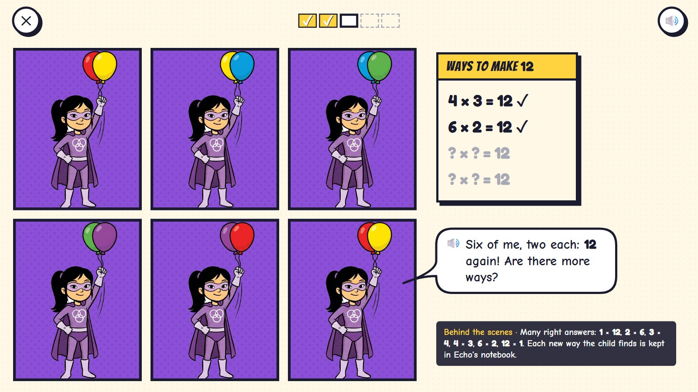
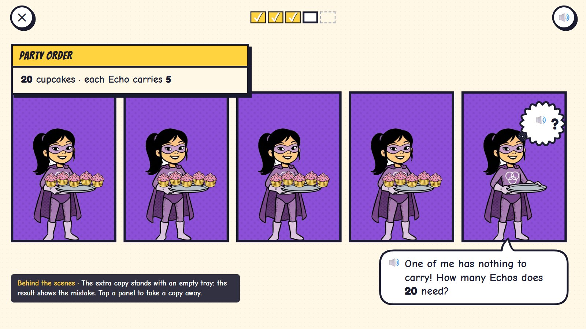
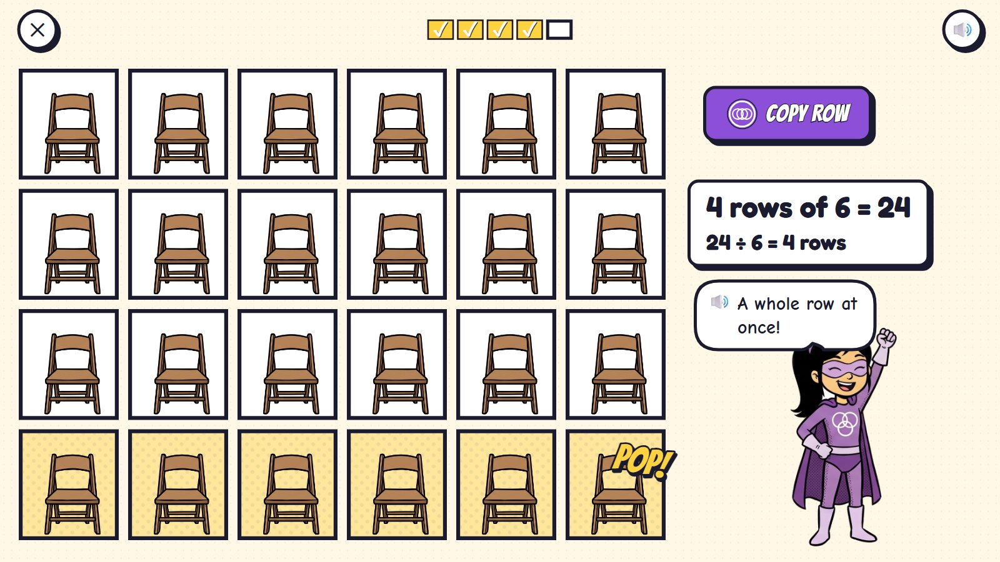
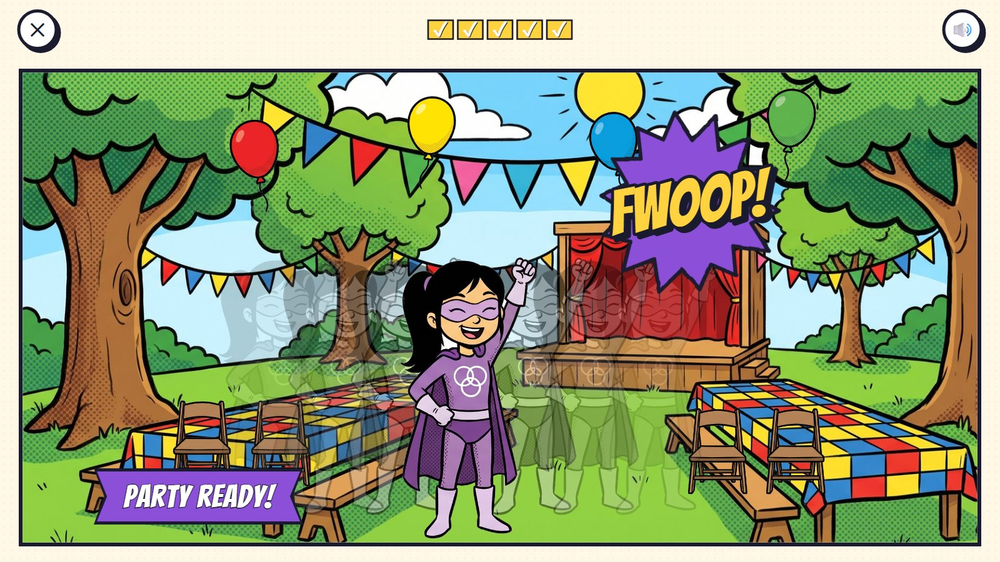

Echo's Copies
Echo can make copies of herself, and in a comic each copy needs a panel. The party needs 12 balloons and Echo can carry 3: every press of COPY pops another Echo into a new panel, carrying 3 too. The count goes 3, 6, 9, 12 under the panels. Rows of panels make an array. "How many Echos do we need?" is dividing. There are several right answers, and Echo keeps every way the child finds.
Grades 1–4 · ages 6–9 hero: Echo panel power: COPY a panel; rows of panels
The maths: Multiplying as equal groups (copies) and arrays (rows of panels); dividing as "how many groups?"; tables to 10 × 10; remainders later. One activity is five rounds, about two minutes. Everything works with one finger or a mouse.
🎉 The fun
Echo multiplies herself: every COPY pops another Echo into a new panel, carrying the same things.
🎥 The view
The page fills with panels as the child copies; panels wrap into rows, an array.
🎆 The finale
The party is ready, and all the Echos snap back into one with a FWOOP (3 seconds).
Six moments

1The party order
12 balloons for the party in the park. Echo can carry 3. A big purple COPY button.
🔊 I can carry 3. Copy me, and every copy carries 3 too!
Echo's power: copying a panel copies everything in it.

2COPY, COPY, COPY
Each copy is a new panel. Under them the count goes 3, 6, 9, 12.
🔊 Four of me carry 12!
Counting in threes comes first, then the sentence 4 × 3 = 12.

3Another way
Echo carries 2: six panels in two rows, 12 again. Echo's notebook keeps every way found.
🔊 Six of me, two each: 12 again! Are there more ways?
Many right answers: 1 × 12, 2 × 6, 3 × 4, 4 × 3, 6 × 2, 12 × 1.

4A wrong try
20 cupcakes, 5 on each tray. The child made 5 Echos: the last one holds an empty tray.
🔊 One of me has nothing to carry! How many Echos does 20 need?
The extra copy shows the mistake by itself. A tap on a panel takes a copy away.

5Copy a row
Chairs for the party: a row of 6 is copied into 4 rows: 24 chairs, and 24 ÷ 6 = 4 rows.
🔊 A whole row at once!
Rows of panels make an array: the same picture shows 4 × 6 and 24 ÷ 6.

6Party ready
The park with balloons and chairs. FWOOP: all the Echos snap back into one.
🔊 Party ready!
Mock-ups: Gemini's comic pictures (scenes, heroes, things) with the maths drawn by code in the same inked look, the way the app would draw it, so every count, clock and colour is exact.
What is asked, for one age
- 12 balloons, 3 each: how many Echos?
- 12 again, 2 each
- 15 cupcakes, 5 on a tray
- 20 cupcakes, 5 on a tray
- 4 rows of 6 chairs
One activity card. The same activity serves other ages with other numbers:
| Age | What changes |
|---|---|
| 6 | Copies of 2, 5 and 10; counting in steps under the panels; no × sign yet. |
| 7 | The × sign; the 2, 3, 4, 5 and 10 tables; "how many Echos?" for sharing into groups. |
| 8–9 | All tables to 10 × 10; rows of panels for arrays; remainders: one Echo carries only 2 (14 is 4 × 3 and 2 more). |
Wrong answers we expect, and what happens
| Mistake | Looks like | What happens (never red, never "wrong") |
|---|---|---|
| Too many copies | an Echo with an empty tray | the child taps a panel to take a copy away |
| Too few copies | cupcakes left on the table | "Who will carry these?" |
| Adding instead of multiplying | says 7 for 4 × 3 | the count under the panels shows 3, 6, 9, 12 |
| Rows and columns swapped | 6 rows of 4 for 4 rows of 6 | it counts (the same 24); Echo turns the array to show it is the same |
What it needs
- Echo in four poses (tray, holding strings, cheering, thinking)
- Balloons, cupcakes, chairs, a tray (cut-outs)
- Panels and counting drawn by code
- The party park scene
Test robot: Reads the total and the group size, presses COPY the right number of times (or copies a row), checks every panel and the total, and once makes one copy too many.
One question
← Back to Comic City · Kitten Rescue · Missing Pieces · Rooftop Hops · Clock Tower · Echo's Copies · Colour Lab · Sticker Pack